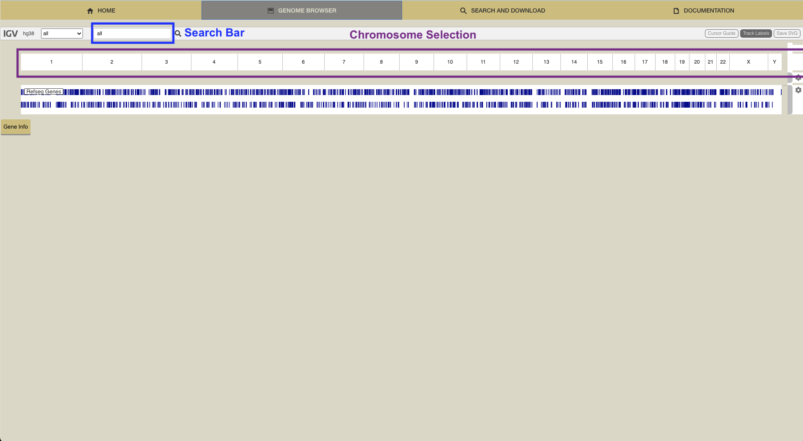
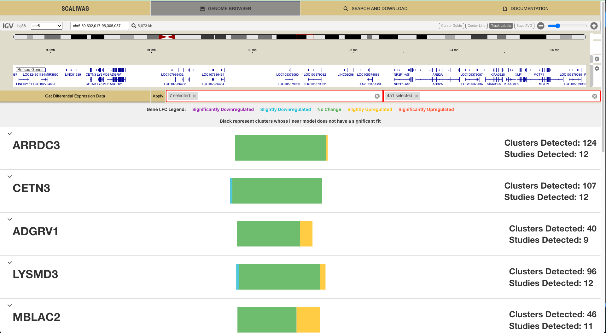
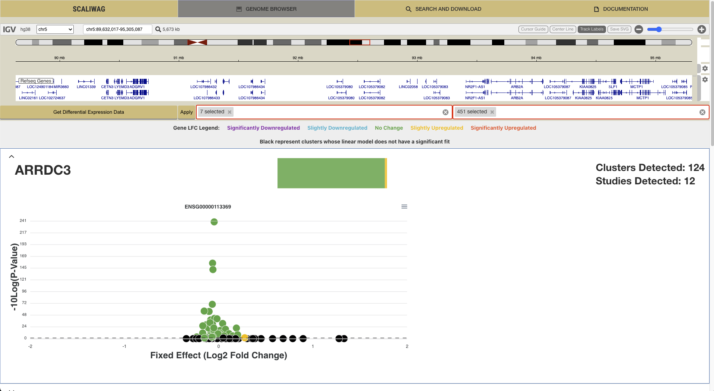
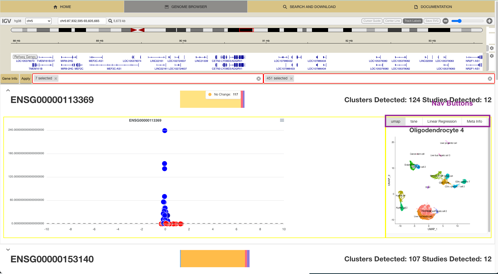
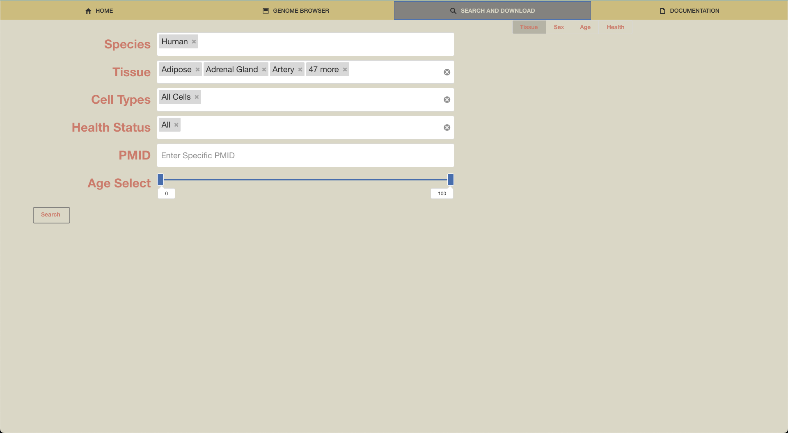

Welcome to the Single Cell Aging Library With A Genome Browser (SCALIWAG) Our homepage serves as a gateway to SCALIWAG and offers an overview of the vast array of data stored within. Here, you can explore the sex and tissue distribution of donors within our database through the graphs at the top of the screen. You can also explore these distributions as a function of age by clicking on any of the age groups in the cornucopia of aging at the bottom of the screen.
Welcome to our interactive genome browser, a portal to the intricate world of gene expression dynamics in relation to age. Within this page you'll explore age's effect on gene expression across many genes, cell types, and tissues. Differential Expression Analysis was performed on a select portion of our database using linear regression, for more details see our publication at PUBLICATION URL HERE WHEN READY. To begin exploring use the IGV interface to select a chromosone or search for a specific gene with the search bar.
You can further explore the genome by using the zoom buttons in the top right or use the focus bar located in the top center of your screen. These tools allow you to easily move through out the genome.n Once you've selected a gene region of interest, click the "Gene Info" button to explore differential expression in this region.

Genes will be displayed below the IGV interface along with summary statistics and the prevalance of that gene within the selcted portion of our database. Central to each gene panel, the summary bar offers a concise snapshot of the gene's age-dependent changes, providing you with swift insights into its dynamic behavior over time. Different patterns of gene expression are represented by colored bars:
Purple: Signifcantly Upregulation
Red: Moderate Upregulation
Yellow: No Change
XX: Moderate Downregulation
XX: Signifcantly Downregulation
Hover over each bar to see the number of detections that fall into each classification. To see more infomation about a certain gene, click on its panel!
Upon selection, genes reveal a volcano plot elucidating the correlation between Log2 Fold Change (x-axis) and -log10 adjusted p-value (y-axis). Each dot signifies a cluster of cells from a study, with genes exhibiting statistically significant expression changes positioned above the dotted horizontal line. For deeper insights into the specific differential expressions within a cluster, simply click to unveil further details.
Once a specific cluster has been slected a new section will apear on the right of the gene pannel. This section is broken up into four parts that can be navigated through using the buttons on the top of the new section. Below these buttons is the name of the cluster that has been selected. The UMAP and TSNE sections displays the UMAP and TSNE (when avaliable) of the overall study, the selected cluster can be found within these reductions. The Linear Regression tab displays the linear regression used to calcualte the log fold change of the selcted gene within the selected cluster. Each blue dot represents a cell with the age of that cell on the x-axis and the expression of that cell on the y-axis. Finally the Meta Info tab references the study this data has been taken from as well as other possible cell types for this cluster.
Welcome to the Search and Download Page. Explore the vast repository of single-cell RNA sequencing (scRNAseq) data effortlessly with our Search and Download feature. Designed to streamline your research endeavors, this page offers a seamless experience for querying our extensive database and acquiring relevant datasets for your investigations. To query the database fill enter your search criteria into the search bar. When youre done, click the "Search" button to return precise results tailored to your specifications.
Once you've pressed "Search", samples fitting your criteria will be displayed in a table below and meta infomation about the results of your search are displayed in a series of charts in the top left of the screen. These charts represent the tissue, sex, age, and health distribtion of samples in SCALIWAG that fit your criteria. To change between various disributions select the buttons on the top left of the screen below the navbar. Specic results matching your criteria are displayed in a table where each row represents a certain sample and displays infomation relevant to that sample. Mark samples for download by clicking on the checkbox to the left of the sample or select all samples by clicking the checkbox located on the very top left of the table. To download marked samples press the "Download Standardized Data" button. This downloads all the samples in a simple standardized format that is easily used by packages like Seurat and Scanpy.